WorkHub · 液态玻璃 Web 换肤签字稿
R10-S1 + S1.5（logo 与导航重构）· 2026-07-10 · 分支 codex/r9-stage-b-rework（commit ba4bf1b22）· 82 步实路由 smoke 全绿后截图
S1 外壳：渐变底 + 顶栏/侧栏真毛玻璃 + 半透明卡片 + 大圆角分级（18/16/12px）+ 对比度 ≥4.5:1 + 降透明度自动回实底。
S1.5（你上轮提的两点）：① logo 从三色渐变方块换成靛紫玻璃 squircle（高光 + 内嵌磨砂玻璃片）；② 左侧 14 个平铺入口重构为四组——工作（总览/项目/提需求/审批）、项目资产（网盘/会议/知识）、团队（通知/日程/项目健康）、管理（成本/军团/技能/设置，仅管理员可见——普通成员导航只剩 10 项）；移动端「更多」按组披露，工作组常驻。
下一步（待确认或直接开工）：S2 把 18 条路由内容组件全面收进玻璃语言；S3 提议审阅 / Replay 两个 legacy 页迁入；批 0c Intake 大件（项目选择器 + 防旧文件带偏）。
S1.5（你上轮提的两点）：① logo 从三色渐变方块换成靛紫玻璃 squircle（高光 + 内嵌磨砂玻璃片）；② 左侧 14 个平铺入口重构为四组——工作（总览/项目/提需求/审批）、项目资产（网盘/会议/知识）、团队（通知/日程/项目健康）、管理（成本/军团/技能/设置，仅管理员可见——普通成员导航只剩 10 项）；移动端「更多」按组披露，工作组常驻。
下一步（待确认或直接开工）：S2 把 18 条路由内容组件全面收进玻璃语言；S3 提议审阅 / Replay 两个 legacy 页迁入；批 0c Intake 大件（项目选择器 + 防旧文件带偏）。
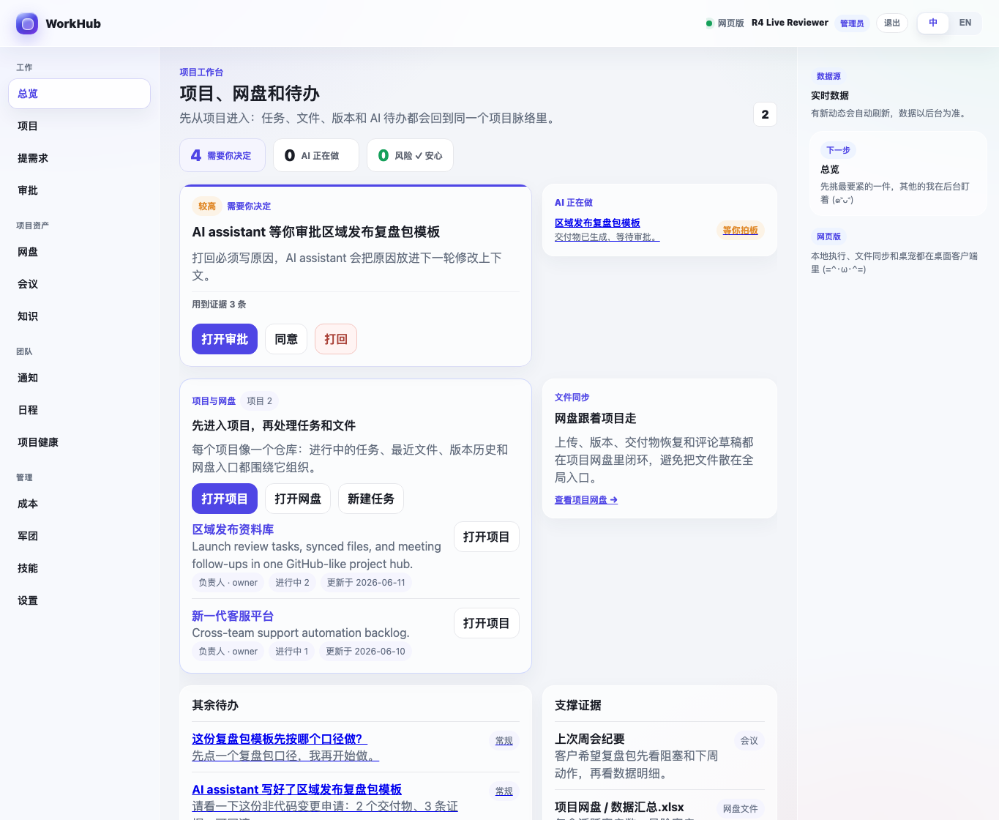
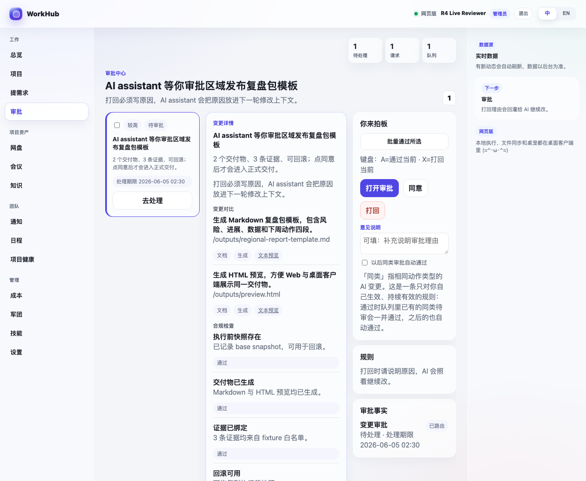
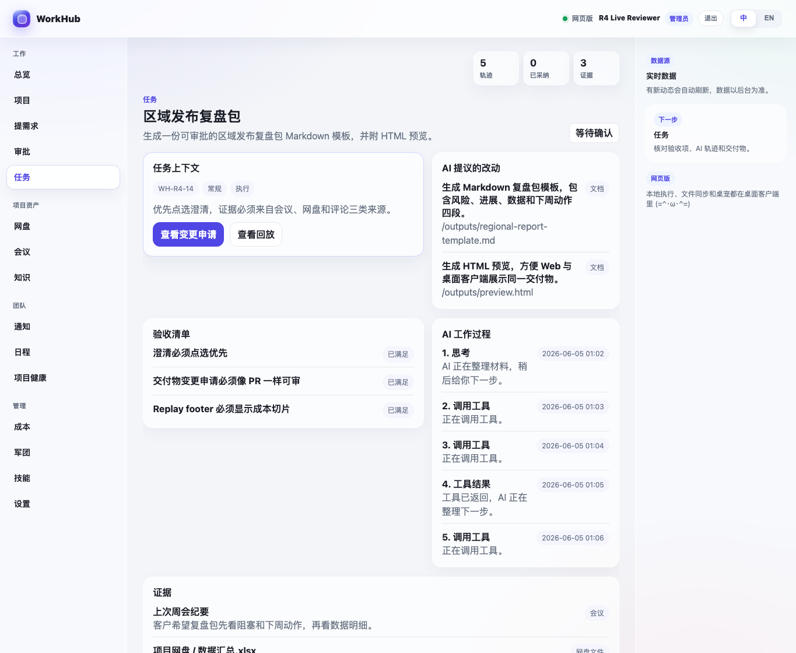
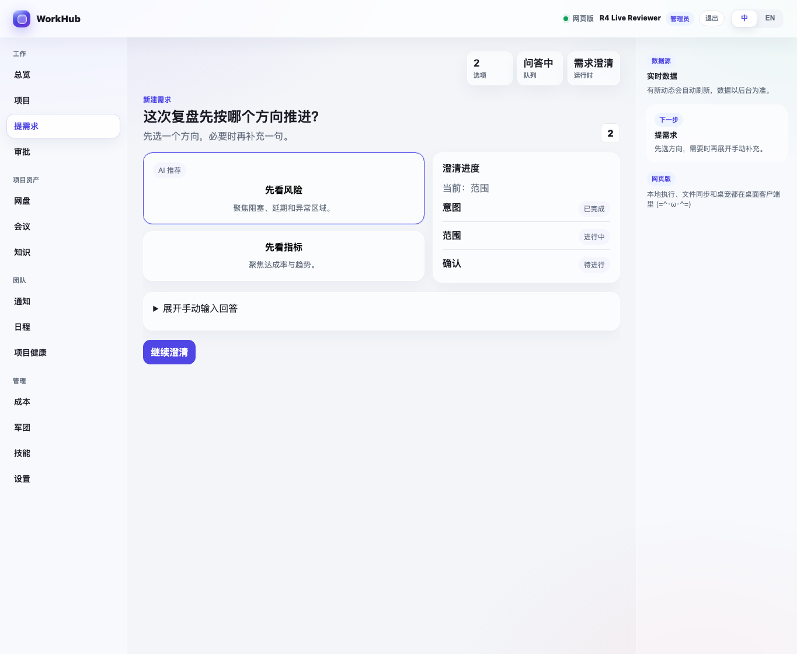
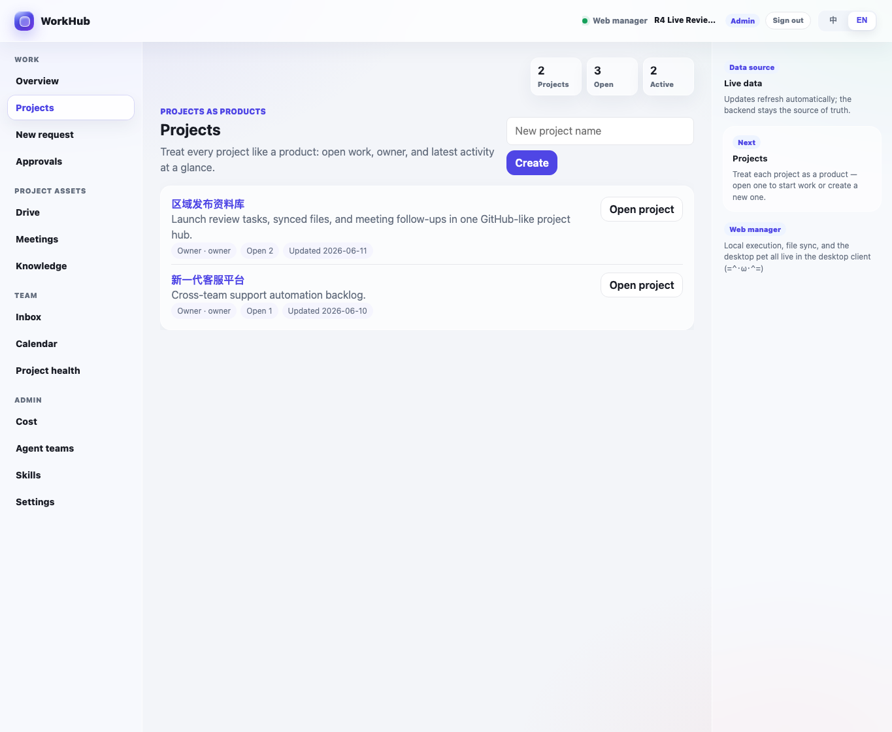
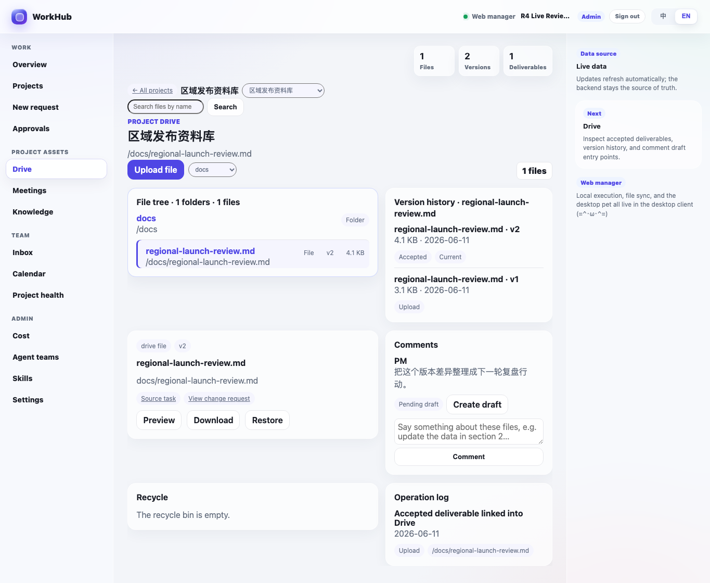
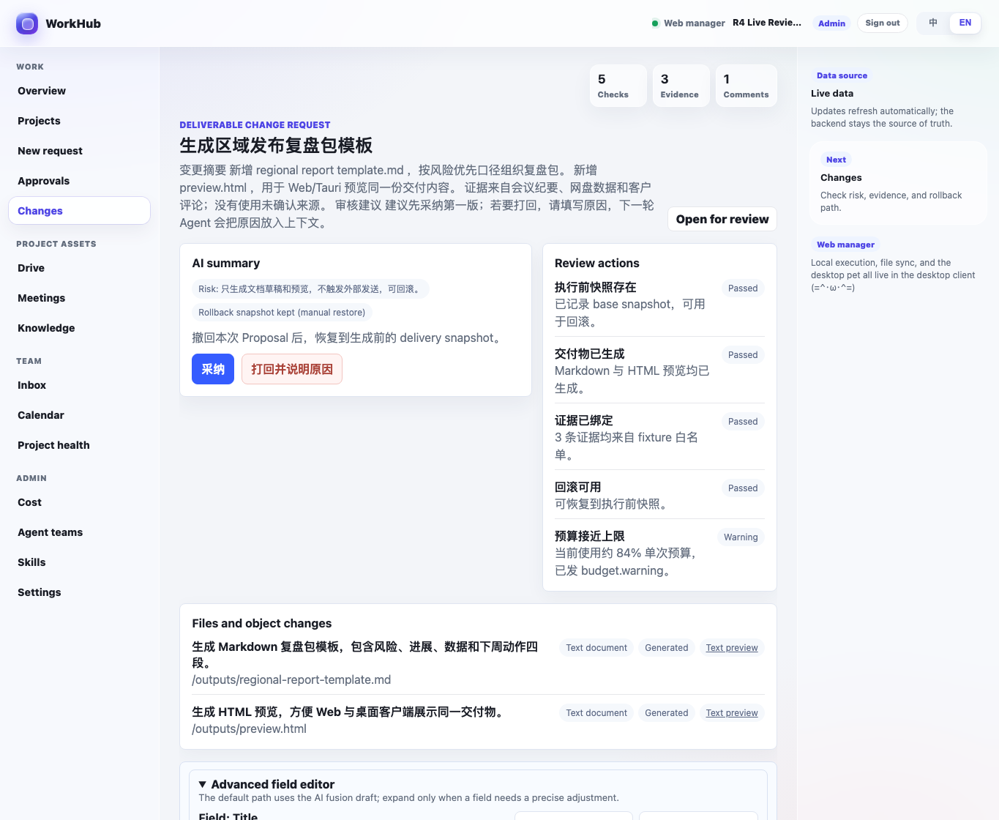
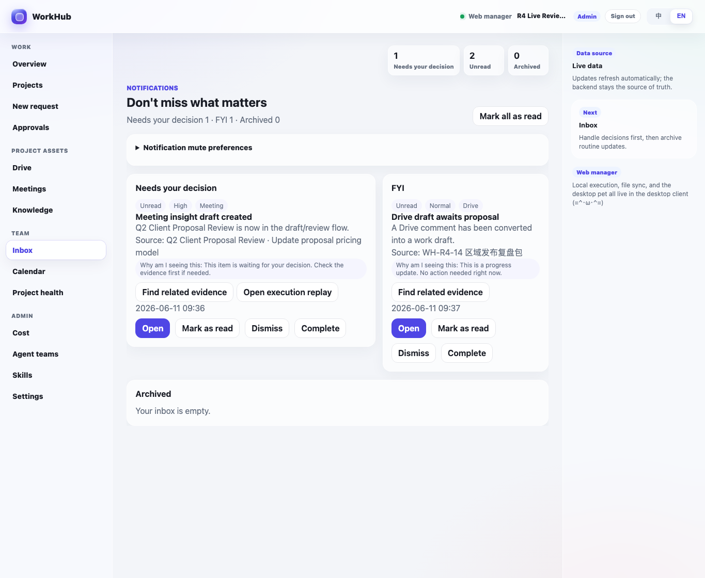
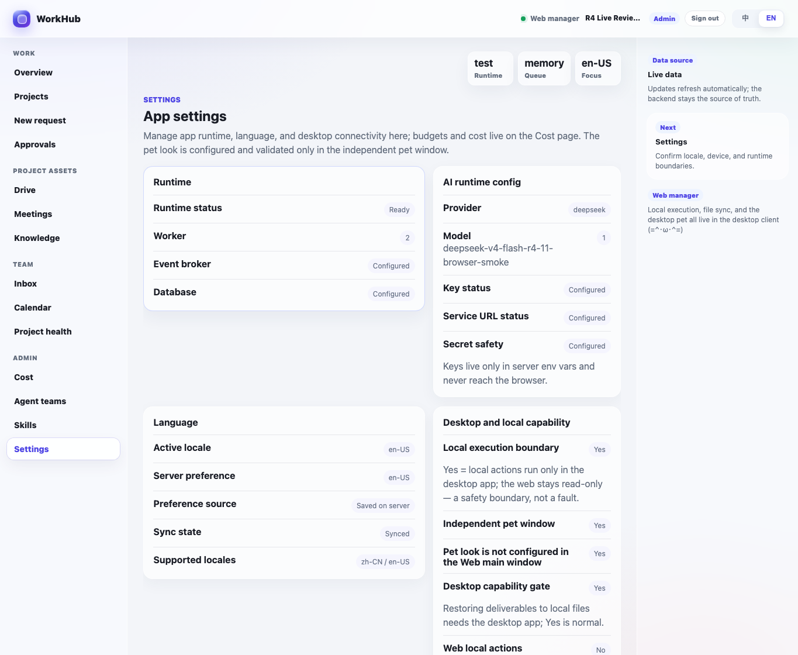
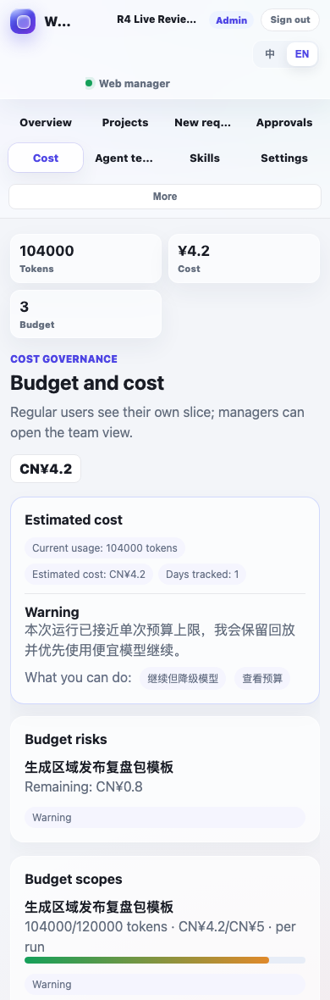
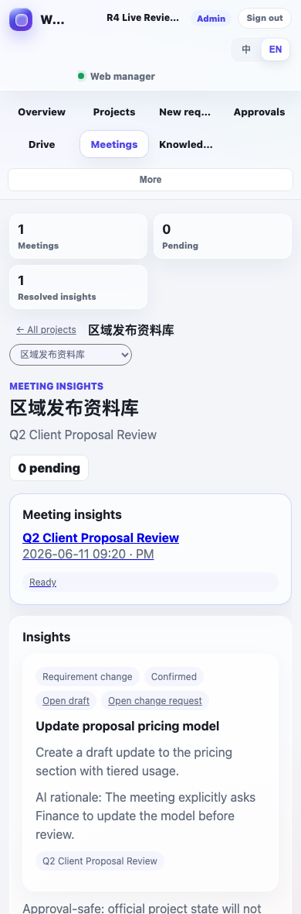